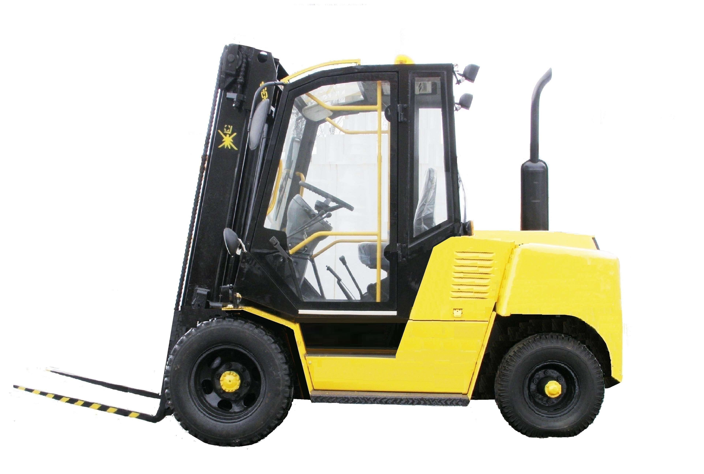
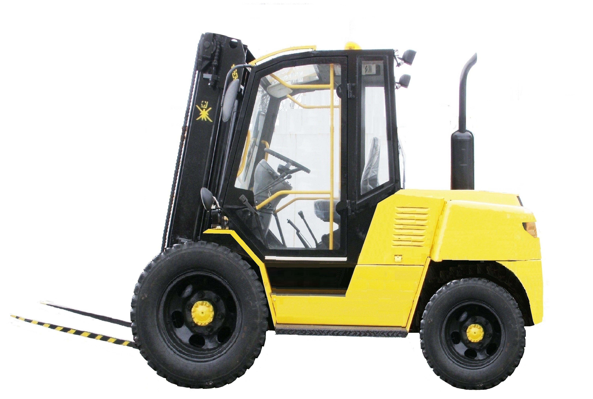
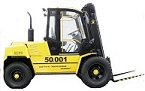
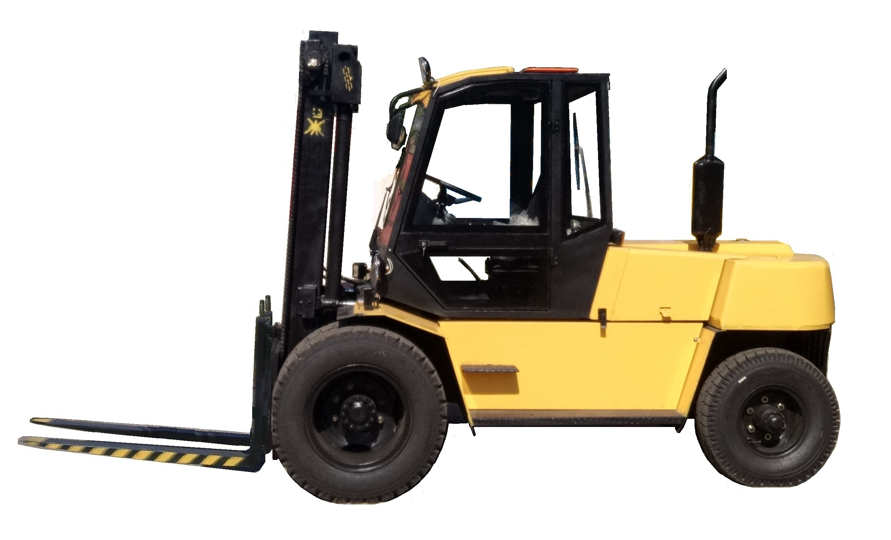
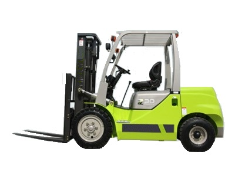
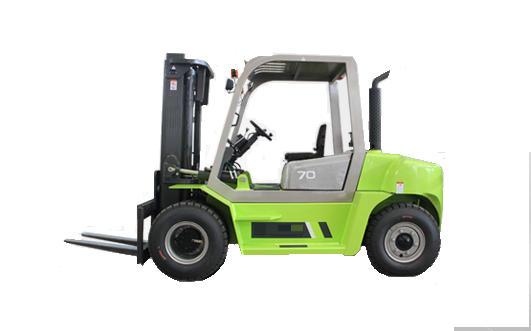
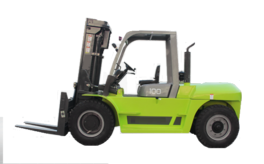
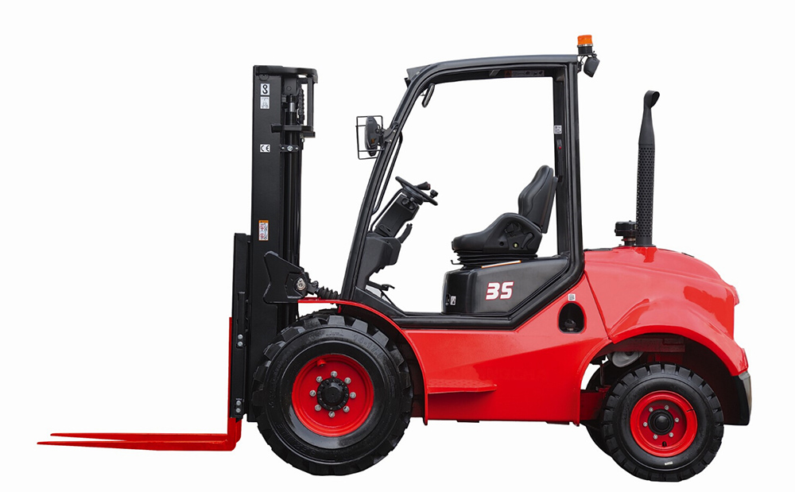

Вилкові дизельні навантажувачі (власного виробництва)
| ЗОБРАЖЕННЯ | МОДЕЛЬ | в/п | Відаль центру вантажу | Висота підйому | Короткий опис |
|---|---|---|---|---|---|
|  | 50.030 | 3000 | 500 | 3300 |
Дизель Д-242, P=46 кW. M=278Нm. Трансмісія – механічна 2/2 Пневматичні шини: передні 8,25-15; задні 7,00-12 |
| 50.035 | 3500 | ||||
| 50.040 | 4000 | ||||
|  | 50.041 | 3000 | 500 | 3300 |
Дизель Д-242, P=46 кW. M=278Нm. Трансмісія – механічна 4/4 Пневматичні шини: передні 11,00-18; задні 7,50-15 |
| 50.042 | 3500 | ||||
| 50.044 | 4000 | ||||
|  | 50.001 | 5000 | 600 | 3300 |
Дизель Д-243, P=59 кW. M=298Нm. Трансмісія – механічна 4/4 Пневматичні шини: передні 8,25-20; задні 8,25-15 |
| 50.001.6 | 6000 | ||||
| 50.001.7 | 7000 | ||||
|  | 50.001.8 | 8000 | 600 | 3300 |
Дизель Д-245, P=95 кW. M=439Нm. Трансмісія – механічна 5/5 Пневматичні шини: передні 11,00-20; задні 9,00-20 |
| 50.001.9 | 9000 | ||||
| 50.001.10 | 10000 |
Вилкові дизельні навантажувачі (комплектація КНР)
| ЗОБРАЖЕННЯ | МОДЕЛЬ | в/п | Відаль центру вантажу | Висота підйому | Короткий опис |
|---|---|---|---|---|---|
|  | FD20E | 2000 | 500 | 3000 |
Дизель XC495BPG P=42 кW. M=174Нm. Трансмісія – автомат 1/1 Шини пневмат Перед- 28х9-15, Задні: 6,50-10 |
| FD30E | 3000 | ||||
| FD40E | 4000 | ||||
|  | FD50 | 5000 | 600 | 3000 |
Дизель CY6102BG P=81 кW. M=353Нm. Трансмісія – автомат 1/1 Шини пневмат Перед- 8,25-15, Задні: 8,25-15 |
| FD60 | 6000 | ||||
| FD70 | 7000 | ||||
|  | FD70S | 7000 | 600 | 3000 |
Дизель XCCA6110 P=83 кW. M=450Нm. Трансмісія – автомат 1/1 Шини пневмат Перед- 9,00-20, Задні: 9,00-20 |
| FD80S | 8000 | ||||
| FD100S | 10000 | ||||
|  | FD-25S2 | 2500 | 500 | 3000 |
Дизель 4JG2 P=88 кW. M=270Нm. Трансмісія – автомат 1/1 Шини пневмат Перед- 12,5-18,Задні: 27-10 |
| FD-30S2 | 3000 | ||||
| FD-35S2 | 3500 |